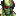

The House of the Dead IIIDetalles
 |
|
| Tiempo de juego | 4m 36s |
| Última actividad | 9/1/2026 7:28:25 |
| Añadido | 21/11/2025 1:26:21 |
| Modificado | 9/1/2026 7:29:55 |
| Estado de finalización | Jugado |
| Librería | Playnite |
| Fuente | |
| Plataforma | PC (Windows) |
| Fecha de lanzamiento | 1/6/2002 |
| Puntuación de la Comunidad | 72 |
| Puntuación de la Crítica | |
| Puntuación de usuario | |
| Género | Shooter |
| Desarrollador | SEGA AM1 WOW Entertainment |
| Editor | Sega |
| Característica | Multiplayer Single Player |
| Enlaces | |
| Tag | |
Descripción
Se debe configurar Gráficos y Lenguaje cada vez que se ejecuta.
Este es el juego que nos comió todas las fichas en el arcade a principios de los 2000. SEGA se la jugó y cambió las reglas: sacó las pistolitas y nos dio una ESCOPETA.
La leyenda de los arcades vuelve con una misión de rescate en un mundo infestado de mutantes.
Escopetazos y Zombies
- El Poder de la Escopeta: La mecánica central cambió. El arma tiene una dispersión amplia, ideal para controlar grupos grandes de enemigos. Además, introduce la mecánica de "Cancelación": si le disparás a un jefe justo cuando te va a atacar, frenás su golpe.
- La Nueva Generación: Thomas Rogan (el héroe del primero) desapareció. Ahora jugás como su hija, Lisa Rogan, acompañada por un Agente G veterano y endurecido. Juntos se meten en las instalaciones de la Corporación EFI para terminar la pesadilla.
- Elegí tu Destino (Branching Paths): El juego no es una línea recta. Vos decidís qué ruta tomar disparando a los interruptores de dirección. Esto cambia los escenarios y el orden en que enfrentás a los jefes, dándole mucha rejugabilidad.
- Eventos de Rescate: En lugar de salvar civiles, ahora tenés que salvar a tu compañero. Si tu amigo (o la IA) es atrapado por un zombie, tenés que dispararle al monstruo con precisión quirúrgica para liberarlo sin herir a tu aliado. ¡Cuidado con el fuego amigo!
Corto, intenso y explosivo. The House of the Dead III es la dosis perfecta de adrenalina arcade para cuando querés apagar el cerebro y dispararle a todo lo que se mueve. ¡RELOAD!